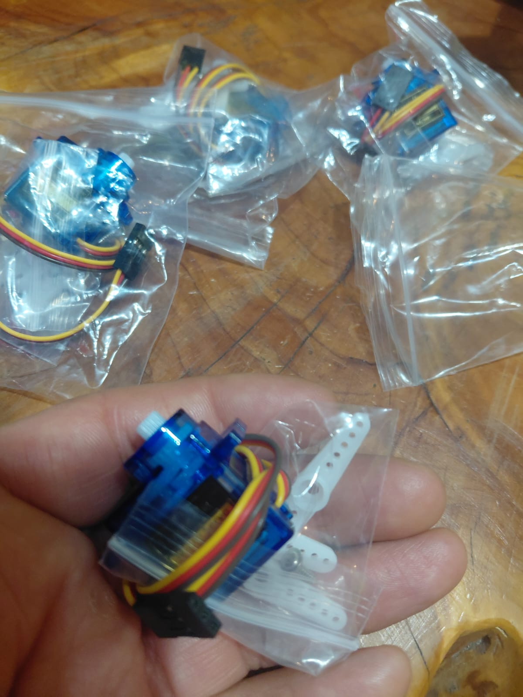
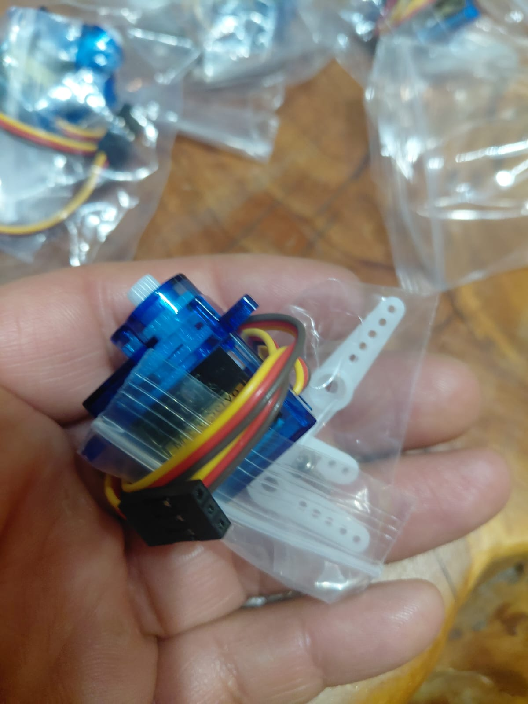
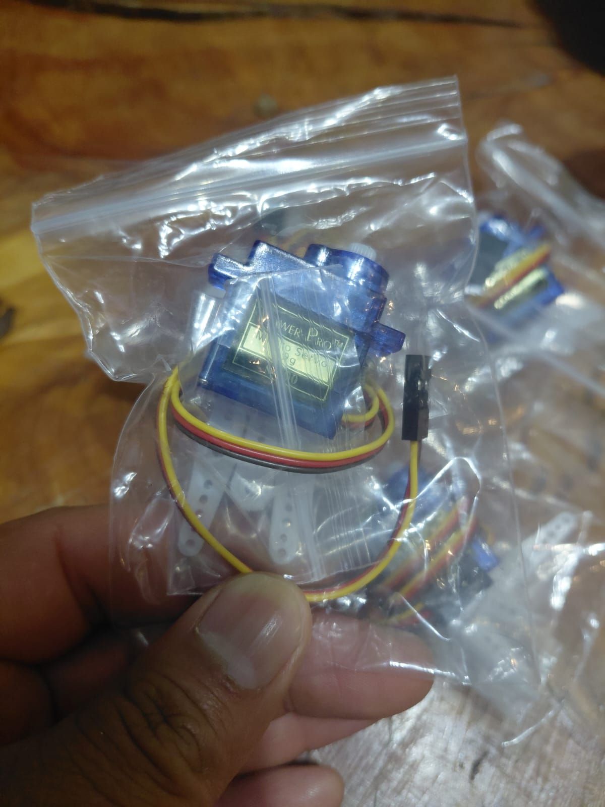

What the SG90 Actually Is (and What It Is Not)
The SG90 is a 9-gram micro servo motor — a small, self-contained actuator that rotates its output shaft to a specific angle when you send it a pulse-width-modulated signal. It is the most common servo in the Arduino ecosystem, and the one you will find in almost every beginner kit.
A servo motor is not a continuous-rotation motor. A regular DC motor spins freely; a servo holds a position. Inside the SG90's translucent blue case there is a small DC motor, a set of nylon reduction gears, a potentiometer (the feedback sensor), and a tiny control board. The control board reads the PWM signal on the orange wire, compares it to the potentiometer's current position, and drives the motor until the two match. This is a closed-loop system, but the feedback stays inside the servo — the Arduino never receives position data back.


The name “Tower Pro SG90” is a specific product, but “SG90” has become a generic label for any 9g micro servo in this form factor. The ones I buy for my classroom in Chile come in bulk bags of 4–10 units, typically from AliExpress or MercadoLibre. They work identically to brand-name Tower Pro units. I have used over a hundred of these across four years of teaching, and the failure rate is about 1 in 15 — almost always stripped gears from students stalling them against hard stops.
Specifications — the Real Numbers
The SG90 datasheet numbers are nominal. Here is what the datasheet says alongside what I have measured in practice:
| Parameter | Datasheet | Measured / practical |
|---|---|---|
| Weight | 9 g | 9–10 g (varies by clone) |
| Operating voltage | 4.8–6.0 V | Works at 3.3V but very weak |
| Stall torque @ 4.8V | 1.8 kg·cm | ~1.5 kg·cm typical |
| Stall torque @ 6.0V | 2.2 kg·cm | Not tested (risk of damage) |
| Operating speed @ 4.8V | 0.12 s / 60° | ~0.1 s observed |
| Rotation range | 180° | 160–170° usable |
| No-load current | 100 mA | 80–120 mA measured |
| Stall current | 650 mA | Up to 750 mA on some clones |
| PWM signal period | 20 ms (50 Hz) | Tolerant of 40–200 Hz in practice |
| Pulse width range | 1000–2000 µs | 544–2400 µs (Arduino Servo.h default) |
| Dead band | 10 µs | Varies, cheap clones have 20+ µs |
| Gear material | Nylon | Nylon — strips under sustained stall |
| Connector | JR / Futaba compatible | 3-pin 2.54 mm female header |
The number that matters most: 650 mA stall current. This is why you cannot power the SG90 from a digital pin (40 mA max) and why running more than two from the Arduino 5V regulator (500 mA from USB) is unreliable. This single spec drives every wiring decision below.
How the PWM Control Signal Works
The servo expects a pulse every 20 milliseconds (50 Hz). The width of each pulse — not its frequency — tells the servo which angle to hold. This is different from the analogWrite() PWM you use for LED brightness, which varies the duty cycle at a fixed frequency of ~490 Hz on most Arduino pins.
- ~1 ms pulse (1000 µs) → 0° — fully counter-clockwise
- ~1.5 ms pulse (1500 µs) → 90° — center position
- ~2 ms pulse (2000 µs) → 180° — fully clockwise
The Arduino Servo library actually uses a wider range by default: 544 µs for 0° and 2400 µs for 180°. This stretches beyond what most SG90 units can physically reach, which is why many people hear the motor buzzing at servo.write(0) or servo.write(180) — the pulse is commanding an angle past the internal mechanical stop. The fix is simple: either avoid 0 and 180 (use 5–175), or restrict the pulse range with servo.attach(pin, 600, 2400).
Important: do not use analogWrite() to control a servo. It runs at the wrong frequency (490 Hz instead of 50 Hz) and the duty-cycle steps are too coarse. Always use the Servo library or generate the pulses with delayMicroseconds() yourself.
Wiring to Arduino — the Right Way
The three wires
The SG90 connector has three wires. The colour coding is almost always:
- Red → VCC (power, 4.8–6V)
- Brown (or black) → GND
- Yellow (or orange) → Signal (PWM)

Minimal wiring (one servo, USB power)
For a single servo running with no load:
- Red wire → Arduino 5V pin (not a digital pin)
- Brown wire → Arduino GND
- Yellow wire → Arduino digital pin 9 (any digital pin works, but 9 is conventional)
This works when the Arduino is powered over USB and the servo is unloaded. The USB port supplies 500 mA, the Arduino itself uses ~50 mA, leaving ~450 mA — enough for one servo under normal operation but not enough if it stalls.
Proper wiring (external power)
For anything beyond a basic demo:
- Red wire → External 5V supply positive
- Brown wire → External supply GND
- Yellow wire → Arduino digital pin 9
- External supply GND connected to Arduino GND (common ground — required)
The common-ground rule: if the servo and the Arduino do not share a ground reference, the signal wire has no return path and the servo will ignore commands or behave erratically. This is the single most common wiring mistake in my classroom.
Arduino Code: Three Sketches
Sketch 1: Basic sweep — the 6-line version
This is the absolute minimum code to make a servo sweep back and forth. Every student writes this first.
#include <Servo.h>
Servo myServo;
void setup() {
myServo.attach(9);
}
void loop() {
for (int angle = 10; angle <= 170; angle++) {
myServo.write(angle);
delay(15);
}
for (int angle = 170; angle >= 10; angle--) {
myServo.write(angle);
delay(15);
}
}Why 10–170 instead of 0–180: as explained in the PWM section, most SG90 units hit their mechanical stop before reaching 0° or 180°. Using 10–170 avoids the stall buzz and extends the servo’s lifespan. The delay(15) between steps gives a smooth, visible sweep; reduce it to 5 for faster motion or increase to 30 for a slow scan.
Sketch 2: Serial-controlled angle
This sketch reads an angle from the Serial Monitor and moves the servo to that position. Useful for finding the actual usable range of your specific servo unit.
#include <Servo.h>
Servo myServo;
void setup() {
Serial.begin(9600);
myServo.attach(9);
Serial.println("Enter angle (0-180):");
}
void loop() {
if (Serial.available() > 0) {
int angle = Serial.parseInt();
if (angle >= 0 && angle <= 180) {
myServo.write(angle);
Serial.print("Moved to: ");
Serial.print(angle);
Serial.println(" degrees");
}
}
}Moved to: 90 degrees
Moved to: 10 degrees
Moved to: 170 degrees
Moved to: 175 degrees <-- buzzing starts here on my unit
Open the Serial Monitor at 9600 baud, type a number, and press Enter. Start at 90, then work toward the extremes. When you hear the motor strain, you have found your servo’s actual limit.
Sketch 3: Servo in a robot car — from my classroom
This is extracted from one of my student’s robot car projects (Robot_2_0.ino). The servo is used in the obstacle-avoidance routine: when the car detects an object in front, it stops, sweeps the servo-mounted sensor left and right to scan for the clearest path, then reverses and turns.
// Extracted from the detener() function in Robot_2_0.ino
// Called when an obstacle is detected in front
void detener() {
// Stop both motors
digitalWrite(IN2, LOW);
digitalWrite(IN3, LOW);
// Scan right
delay(1000);
servo1.write(160);
// Scan left
delay(1000);
servo1.write(0);
// Return to center
delay(1000);
servo1.write(80);
// After scanning, reverse and turn
delay(1000);
atras();
girarDerecha();
}Note the bug: this code uses servo1.write(0), which stalls the servo against its mechanical stop on most SG90 units. The fix is servo1.write(10). Also, the centre position is set at 80° rather than 90° — this was because the specific servo had a slight offset, which is normal for cheap units. In a classroom, I tell students to find their own servo’s centre point using Sketch 2 above.
The full sketch uses servo1.attach(13) and the car is controlled via Bluetooth (SoftwareSerial on pins 10 and 11). The servo scans in fixed positions rather than a continuous sweep — simple to code but slow. A future improvement would be to take distance readings at several angles using the HC-SR04 ultrasonic sensor and pick the direction with the maximum clearance.
The Three Problems Everyone Hits
Problem 1: Jitter (servo vibrates when it should be still)
You command servo.write(90) and the horn trembles in place instead of holding steady. This is the most common SG90 complaint.
Causes:
- Electrical noise on the signal line (long wires, breadboard with poor contacts)
- Insufficient power supply — voltage drops when the servo draws current, the feedback loop hunts
- The dead band of cheap servos is wider than the control resolution, so the motor oscillates between two positions
Fixes:
- Add a 100 nF (0.1 µF) ceramic capacitor between the signal pin and GND, as close to the servo connector as possible
- Add a 470 µF electrolytic capacitor across the servo’s power lines (VCC and GND) to absorb current spikes
- Use an external 5V supply instead of USB power
- Call
servo.detach()after the servo reaches its target, thenservo.attach(pin)before the next move — this stops the PWM signal entirely, eliminating jitter but also losing holding torque
Problem 2: Brown-out (Arduino resets when servo moves)
The servo starts moving, and the Arduino restarts — the serial monitor prints the setup message again, LEDs blink as if powered on. This happens because the servo’s current spike pulls the 5V rail below the Arduino’s minimum operating voltage (~4.2V for the Uno).
Fix: use an external power supply for the servo. Do not rely on USB power for a servo that is doing real work. A 4xAA battery pack (6V) or a 5V 2A wall adapter works perfectly. Remember common ground.
Problem 3: Stripped gears (servo stops responding to certain angles)
The servo moves partway, then slips or makes a clicking sound. The nylon gears inside are stripped.
Why it happens: the SG90’s nylon gears cannot survive sustained stalling. In my classroom, this happens when students physically hold the horn while the servo is trying to move, or when the code commands an angle past the mechanical stop and the motor runs continuously against it.
Prevention:
- Never go below 5° or above 175° in code
- Never physically force the horn while the servo is powered
- Use
servo.detach()during robot assembly so students can position the horn by hand - For applications with impact risk (robot car bumpers, gripper arms), switch to the MG90S (metal gears, same form factor)
Running Multiple Servos
The Servo library can control up to 12 servos on an Arduino Uno and up to 48 on a Mega. Each servo gets its own instance:
#include <Servo.h>
Servo pan; // horizontal sweep
Servo tilt; // vertical sweep
void setup() {
pan.attach(9);
tilt.attach(10);
}
void loop() {
pan.write(45);
tilt.write(90);
delay(1000);
pan.write(135);
tilt.write(45);
delay(1000);
}Timer conflict: on the Uno, the Servo library uses Timer1, which disables analogWrite() on pins 9 and 10 regardless of which pins the servos are connected to. This catches many students by surprise when their LED dimming code stops working after adding a servo. On the Mega, Timer1 affects pins 11 and 12 instead, and additional servos use Timer5 (affecting pins 44, 45, 46).
Power: two SG90 servos drawing 200 mA each = 400 mA, already near the USB limit. Three or more servos require external power. A good option for classroom use is a 5V 3A BEC (battery eliminator circuit) from an RC hobby shop — they are designed for exactly this job.
Real Classroom Projects Using the SG90
These are projects my students have built using SG90 servos in my robotics classes:
- Ultrasonic sensor pan mount: an SG90 sweeps an HC-SR04 sensor left and right, building a simple distance map. This is the upgrade step after the basic ultrasonic LED project.
- Obstacle-avoiding robot car: SG90 mounted on the front of a 2WD chassis, carrying an HC-SR04 or IR sensor. The obstacle-avoiding car article documents a version of this build.
- Bluetooth-controlled gripper: two SG90 servos forming a simple two-finger gripper, controlled via a phone app and an HC-05 Bluetooth module.
- Automatic barrier gate: one SG90 lifts a cardboard arm when a PIR sensor detects someone. This uses the HC-SR501 PIR module covered in another article.
All of these use the same basic wiring and code patterns described above. The SG90 is the perfect classroom servo because it is cheap enough that stripped gears are not a catastrophe — at ~$1.50 each, I budget for 10% attrition per semester.
SG90 vs MG90S vs MG996R: Which One to Buy
| Feature | SG90 | MG90S | MG996R |
|---|---|---|---|
| Weight | 9 g | 13 g | 55 g |
| Torque @ 4.8V | 1.8 kg·cm | 1.8 kg·cm | 9.4 kg·cm |
| Stall current | 650 mA | 700 mA | 2500 mA |
| Gear material | Nylon | Metal | Metal |
| Size | 23 × 12 × 29 mm | 23 × 12 × 29 mm | 40 × 19 × 43 mm |
| Price (approx.) | $1–2 | $3–5 | $4–7 |
| Best for | Classroom projects, light loads, pan/tilt | Pan/tilt with impacts, small grippers | Robot arms, heavy grippers, steering |
My recommendation for beginners: start with the SG90 for learning. Switch to the MG90S for anything that takes physical abuse (robot car sensor mounts, grippers that stall). The MG996R is a different class entirely — it is a standard-size servo for robot arms and large projects, and it absolutely requires external power (2.5A stall current will instantly brown-out an Arduino).

Frequently Asked Questions
What is the difference between the SG90 and the MG90S servo?
Both are 9g micro servos with identical dimensions and the same control signal. The SG90 has nylon gears (~$1.50). The MG90S has metal gears (~$4), holds up better under load, and is slightly heavier (13g vs 9g). For classroom work and light loads, the SG90 is fine. For anything that takes repeated impacts, the MG90S lasts longer.
Can I power the SG90 directly from an Arduino pin?
No. Arduino digital pins supply 40 mA max, but the SG90 draws 100–250 mA normally and can spike to 650 mA during stall. The servo is powered from the 5V pin (USB/regulator rail) or, better, from an external 5V source. Only the signal wire (yellow/orange) connects to a digital pin.
Why does my SG90 servo jitter or vibrate when it should be still?
The most common causes are: electrical noise on the signal wire (add a 100nF capacitor), insufficient supply voltage causing the feedback loop to hunt (use an external supply), or a dead-band issue inherent to cheap servos. Calling servo.detach() after reaching position stops jitter but loses holding torque.
What angle range does the SG90 actually support?
The datasheet says 180°, but most SG90 units only reach about 170° before hitting the internal mechanical stop and stalling. Some clones top out at 160°. If the motor buzzes at 0 or 180, back off by 5–10 degrees. Using 10–170 is the safe default.
How many SG90 servos can I run from one Arduino?
The Servo library supports up to 12 on an Uno and 48 on a Mega. But the real limit is power: each draws 100–250 mA, so three servos exceed what USB power can safely supply. Beyond two servos, use a dedicated 5V supply with common ground to the Arduino.
This article was written from first-hand classroom experience with purchased components. No manufacturer provided free units or sponsored this content. For our full editorial approach, see editorial standards.